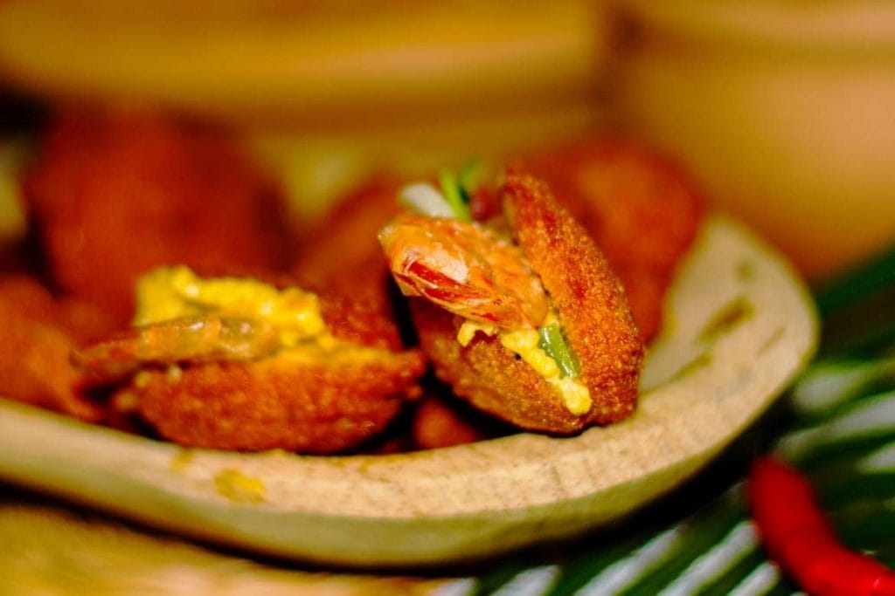

Acarajé

Description
It is a dumpling made with black-eyed peas, fried in palm oil and stuffed with shrimp, vatapá (made with dried shrimp, coconut milk, peanuts and palm oil), caruru (okra stew that also includes shrimp) and pepper sauce.
Ingredients
- 500 grams of black-eyed peas
- 2 onions
- Salt
- Palm oil
Steps
-
Start by soaking the black-eyed peas overnight or for 8 hours in a bowl. The beans will swell and then
you will be able to remove the skin.
-
To peel the beans, hold them by the black eye and you'll see how the skin comes off more easily.
After peeling all the beans, you should put them in a sieve to dry for an hour.
-
Traditionally, acarajé is made in a mill, but so that everyone can make this Bahian dish, we are going
to use a blender. So the next step is to chop the onions, add the black-eyed peas and a pinch of salt.
Beat everything very well until you get a creamy consistency, neither too creamy nor too soft.
-
After that, pour the acarajé paste into a bowl and beat it with a wooden spoon until it reaches a
mousse-like consistency.
-
Now heat the palm oil and, in order not to burn, a tip is to put an onion in the oil, peel and all.
With the help of a wooden spoon you will form the dumplings and fry them in palm oil. You put the
dumpling in the oil and let it cook until it's very brown on the bottom, then you can turn it.
When you have a thick and crunchy crust, you can try your Bahian acarajé.
-
Fry all the acarajé balls and place on absorbent paper to drain the oil. You can serve it just like
that, or open the Bahia dumplings in half and stuff them with shrimp vatapá. Then serve the Bahian
acarajé!
Back to home